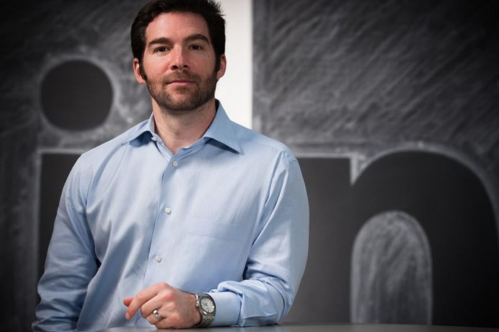

соціальна мережа для пошуку і встановлення ділових контактів. У LinkedIn зареєстровано понад 774 мільйонів користувачів (на 2021 рік), що представляють 150 галузей бізнесу з 200 країн. Сайт представлений англійською, французькою, німецькою, італійською, португальською, іспанською та російською мовами. 13 червня 2016, Microsoft анонсувала придбання LinkedIn за $26.2 мільярдів, завершення угоди очікується до кінця 2016.
Соціальна мережа LinkedIn була заснована Рейдом Хоффманом у грудні 2002 року, запущена в травні 2003 року.
Нинішній керівник компанії — Джефф Вейнер, раніше представник правління Yahoo!
Штаб-квартира компанії знаходиться в Маунтін-В'ю, Каліфорнія, США. LinkedIn має також офіси в Омасі, Чикаго, Нью-Йорку і Лондоні. Компанія була фінансована такими інвестиційними фондами як: Грейлок, секвоя Капітал, Бейн Капітал, Бессемер. 19 травня 2011 р. Linkedln нарешті провела заплановане первинне розміщення акцій (IPO) на Нью-Йоркській фондовій біржі, в ході якого інвесторам було продано 7,84 мільйона акцій по $45 за штуку. Завдяки IPO компанії вдалось залучити $352,8 млн, що зробило це розміщення одним з найбільших в інтернет-секторі США (поступилось лише Google). В перший же день торгів акції LinkedIn користувались шаленим попитом, і завдяки цьому ціна закриття зросла більш, ніж вдвічі — до $94 (найвища зафіксована ціна — $122,7). Таким чином капіталізація LinkedIn склала $8,9 млрд. У багатьох інвесторів є деякий скепсис щодо такої високої оцінки компанії, адже її ціна тепер становить 36 річних доходів ($243 млн). За цим показником вона зрівнялась з Facebook, капіталізація якого на позабіржовому ринку оцінюється в 30-40 річних доходів. LinkedIn станом на березень 2011 року мала 102 млн користувачів.
4 серпня 2016 року Таганський районний суд Москви задовольнив позов Роскомнадзора до LinkedIn Corporation. Як пояснював представник Роскомнадзора, федеральна служба вважала, що LinkedIn обробляла персональні дані третіх осіб без їх згоди. Претензії також викликало те, що ресурс не надав відомостей про локалізацію серверів на території Росії. 10 листопада 2016 року, Мосміськсуд відхилив апеляцію LinkedIn на рішення Таганського районного суду міста Москви. Таким чином, рішення про блокування ресурсу вступило в силу
Близько половини користувачів LinkedIn є жителями США і приблизно 11 мільйонів зареєстровані в Європі. Великий прогрес спостерігається в Індії, в кінці 2009 року там було зареєстровано 3 мільйони користувачів.
LinkedIn надає можливість зареєстрованим користувачам створювати і підтримувати список ділових контактів. Контакти можуть бути запрошені як з сайту, так і ззовні, проте LinkedIn вимагає попереднє знайомство з контактами. У випадку, коли користувач не має прямого зв'язку з контактом, він може бути представленим через інший контакт.